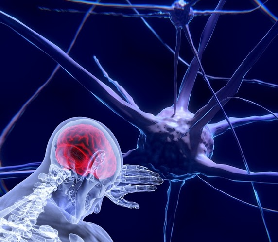
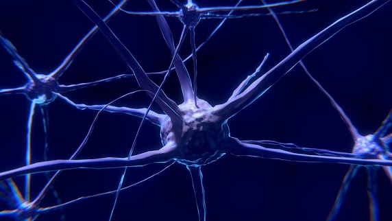

O Principal Conceito de mentalidade de crescimento é desenvolver seu cérebro mesmo errando uma questão por exemplo, ao exercitar seu cérebro você o desenvolve e fica cada vez mais rápido mais fácil e melhor aprender novos conteúdos e exercitar ou atualizar os que você já sabe, seu cérebro não é uma maquina burra como um computador com um processador que com o tempo fica ultrapassado; você tem uma maquina que se auto atualiza sempre aprendendo e se reprogramando pra ficar mais "potente".
Seu cérebro e constituído de neurônios, Mas o que são neurônios ? Eu respondo neurônios são células sensível a estímulos elétricos, e sempre que você cria uma memoria tanto de algo que você assistiu, leu, ouviu seus neurônios criam ligações elétricas entre si ; mas as ligações mais "poderosas" acontecem quando você APRENDE, algo novo, ligações elétricas tao poderosas que mesmo com a idade você tem dificuldade de perde-las , aprender algo (realmente aprender) gruda mais no seu cérebro que chiclete na sola do sapato.
No vídeo ao lado PEDRO CALABREZ do canal Neuro Vox ensina mais sobre o funcionamento do seu Amigo "Cérebro" e os neurônios
Você Pode Exercitar Seu cérebro pra tornas as ligações ainda mais fortes só de você estar interessado em um assunto seu cérebro já trabalha melhor e libera substancias químicas que aumentam a ligação elétrica entre os seus neurônios , e aumentando a velocidade e seu poder de Aprendizado, Pense que seu cérebro é um personagem de um Game Online de RPG, quanto mais você joga mais seu personagem fica PODEROSO e desafios Com maior dificuldade tende a aparecer que Vão deixando seu personagem cada vez mais Forte, Assim é seu cérebro quanto mais você aprende mais PODEROSO fica seu cérebro e você acaba ficando viável a enfrentar desafios, questões, e assuntos cada vez mais difíceis,Mas quando você "olha pra traz" os desafios que você já passou e ate os que você já teve dificuldade parecem "uma mão com assucar".
Veja abaixo mais um bom Exemplo de Como Seu Cérebro Funciona
Essa "coisa" que vc ta vendo ai é uma imagem Ilustrativa de tecido muscular basicamente seus muculos são feito disso aí . mas você pode pensar eu sou um magrelo que passa o dia inteiro jogando LOL no PC. Mas te digo uma coisa, tecido muscular tem uma propriedade que você deve conhecer, seus muculos ao passar por muito stress acaba se fortalecendo e ficando mais forte pra resistir melhor a esse stress na próxima vez, então se você ai jogador de LOL quer ganhar "aquele" corpo do Léo Estronda, te garanto que não vai ser levando seu Notebook de um lado pro outro, você precisa forçar seus muculos para deixá-los poderosos.
Bem esse você já conhece são seus neurônios e assim como seus muculos basta você forçá-los para que se fortaleçam seu cérebro não evolui com desafios fáceis você precisa de algo desafiador para tornar seu amigo cérebro mais preparado para o próximo desafio. Então você ai jogador de Futebol que tira zero o semestre todo em matemática, não vai ser fazendo 2+2 que você vai ficar mais inteligente não é mesmo, então que tal aprender algo novo em Matemática
Bem pense assim Sempre que você erra seu "Amigo" cérebro foi desafiado e mesmo que erre na próxima vez seu cérebro vai estar mais bem preparado para os próximos desafios Até Porque é cientificamente comprovado que errar é bom e te deixa sim mais inteligente
Veja o vídeo do Khan Academy sobre "Erros são oportunidades"
FINALIZANDO: Seu cérebro é uma maquina de aprender que evolui com desafios, a evolução segundo Darwin Faz uma seleção natural a qual só os indivíduos com os melhores genes sobrevivem e gerem descendentes para passar esses genes. Ou seja seu cérebro é uma seleção dos melhores neurônios que tem.